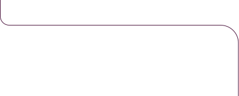
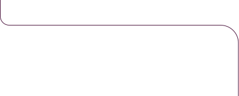

A análise estratégica que você procura para entender o que está acontecendo.
Ganhe clareza e entenda como o tráfego pago pode fazer o seu negócio alcançar mais resultados.
Um upgrade nas suas campanhas
(e nas suas vendas)
tráfego tem um
ponto cego. Um problema escondido ou uma oportunidade inexplorada que te faz perder dinheiro…
 



Quando, aparentemente, está tudo bem.
Quando você acha que já fez de tudo para melhorar os resultados.
Quando você vai iniciar um projeto e desenha uma nova estratégia de tráfego.
Por isso, se você suspeita que seu tráfego poderia trazer mais resultados, você provavelmente está certo.
E, para empresas que levam anúncios a sério, isso custa caro.
Em muitos casos, centenas de milhares de reais e meses de trabalho.
Um novo olhar
Se todo tráfego tem um ponto cego, todo tráfego pode melhorar — inclusive o seu.
É exatamente isso que nós te oferecemos.